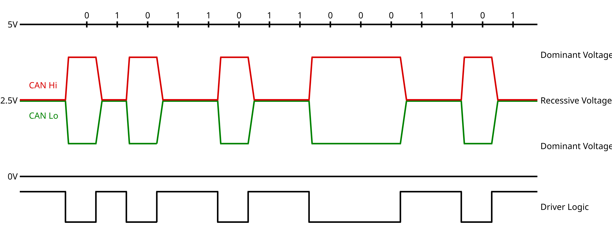
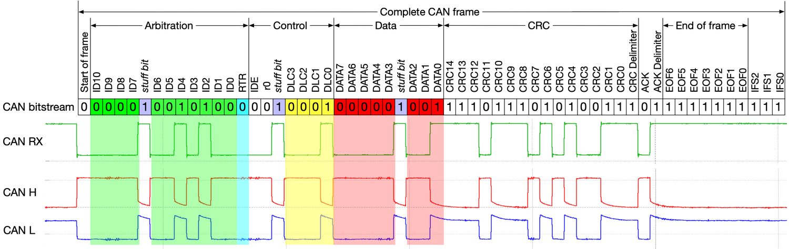

Disclaimer
This is not a tutorial in any shape or form. I’m simply sharing my experience. i dont indulge doing anything similar.
Car Controller 🎮
Challange:
Achieve control over the car's systems, including steering, braking, and acceleration.
Rules:
- Limited to one day of work.
- No external assistance allowed.
- All tools must be developed by me.
- Don't read similar projects, just focus on general information.
Hardware
The only exampt to the rules was ordering hardware to communicate with the car. After a quick review, the Adafruit RP2040 CAN Bus Feather with MCP2515 CAN Controller was selected.


CAN bus
A Controller Area Network (CAN) is a vehicle bus standard that enables efficient communication between electronic control units (ECUs). Using differential signaling, it allows various modules within a vehicle to exchange messages. Our goal is to send messages on the car's CAN bus to gain control over the vehicle's systems, such as steering, braking, and acceleration.


Car conneciton
How can we eavesdrop on the car's CAN bus communication and later send messages?
My first attempt was through the OBD2 port, a standard port found in all cars used for diagnostics.

I began by programming the Adafruit RP2040 to listen for CAN bus messages and print them to the serial console. I connected the programmed device to the OBD2 CAN, and... nothing happened.
After reading some more CAN documentation, I realized the issue might be with the configured CAN speed in my controller. I tried all the available speeds, and... still nothing.
After further reading, I discovered that some newer cars have a gateway between the car's bus and the OBD2 port. This means we only get a response when we send a request message for a specific feature. And... after sending such a message, it works!
How do we bypass this gateway? Well, the Lane Keep Assist System—our first target—has direct access to all the car's interesting systems. We plan to bypass the OBD2 port and connect directly between the LKAS and the car, allowing us to access all the interesting messages. But where is the LKAS located?
The LKAS needs a camera for operation, there's a camera on the windshield, so the processing is likely handled there as well, right?


Looks promising. We have four wires going to a module: red is likely power, black is ground, and the two yellow ones are probably CAN. Let's build a harness to connect our rp2040 based can device between the car and the LKAS module.


I'll admit that 'harness' might not be the best word to describe this mess, but it works.
Now we have access to the car's CAN bus.
Tooling
Access without a way to analyze traffic isn't very useful. Our first tool will be a GUI to visualize all the messages. Each message on the CAN bus has an address and contains up to 8 bytes of payload (data), which we aim to analyze and eventually manipulate.
CAN visualiser

This GUI, built by me with PyQt5, logs each new address in a separate row, and updates the row if the data associated with an address changes with a new massage. If we let the car idle for a minute or two, no new addresses will appear. However, pressing the brake pedal will trigger a new address. By examining the first byte of this address and plotting it, we can observe the signal corresponding to pressing the brake pedal.
CAN recorder
Record CAN messages and microphone data synchronized. We'll drive the car with LKAS activated, and when the LKAS triggers an event, we'll speak and describe the event. This same methodology can be applied to other features like adaptive cruise control (acceleration and braking) or even the windshield wipers. We will look for adresses that thier payload includes bytes that change only when a event is hapenning. We will look for addresses whose payload contains bytes that only change when an event occurs.
Control
First, we'll try to identify the LKAS system's steering command. Using our CAN recorder, we gathered several suspected addresses, and with the help of our newly developed CAN visualizer, we narrowed it down to one address. Let's refer to this address as 0x200 (not the actual address).
When observing this adress using out CAN visualizer, we see several patters.
Byte8- changes randomly.
Byte7- Counter of some sort, counts form 0 to 15 and back to 0.
Byte4-6 - Doesn’t change much, changes when the system is active and preforming steering.
Byte1-3 - Changes occur only during steering events and increase with greater steering input, likely based on torque (the amount of torque applied). I don't see a correlation with the steering angle.
One of the simplest attacks on a CAN bus involves listening for a message with a specific address and, once detected, sending a counterfeit message with the same address but modified data. This attack exploits the CAN bus protocol, which prioritizes the most recent message, causing the targeted device to read the altered message from the buffer.
As an initial step, I sent an identical message to ensure the timing was accurate and no errors occurred. Second step is to alter the data to induce steering.

Well, that didn’t work too well. Did i break it?
No, it turns out that power cycling is a good solution to reset errors, not just for your phone, but for cars as well.
After researching CAN-bus security, I realized that car engineers were serious about preventing people like me from tampering with critical systems. It turns out Byte 7 of the payload is a counter that ensures a consistent stream of messages from the source (LKAS), while Byte 8 is a CRC checksum designed to verify that the message hasn’t been altered.
I have tried several different CRC algorithms, but I couldn't find one that produced the same checksum as in the original message. That is, until I came across this document: https://illmatics.com/Remote%20Car%20Hacking.pdf, where some security researchers worked on the same car platform (Chrysler) and reverse-engineered the checksum algorithm. Now i can reproduce the same checksum as the original message.
However, I still had no success sending commands. After more reading and experimentation, I discovered that the car's ECU enforces a change rate limit that cannot be exceeded. The steering torque request needs to be gradual, with a limit on the torque request. Exceeding either of these values results in an error, disabling the system until the car is restarted.
Success 😁

A python was written script to establish a serial comunication between the playstation controller and the rp2040 that controll the CAN-bus logic.
IMPORTANT
No car was driven by me using those controls on a public road, nor do I engage in such activities. If at any point in this document I claim otherwise, it is purely my imagination or AI.